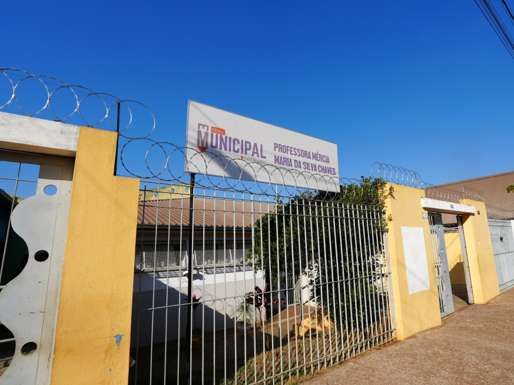

Inácio Franco é um nome que Pará de Minas conhece bem. Empresário,
empreendedor e produtor rural, ele já esteve à frente da nossa
cidade, trazendo progresso, desenvolvimento e, acima de tudo,
momentos de felicidade para nossa gente. Sob sua liderança, vivemos
tempos de crescimento e harmonia.
Hoje, Inácio retorna com o mesmo compromisso e dedicação, mas agora,
ao lado de uma nova força: Luiz Lima, um jovem vereador que traz
consigo a energia e a inovação que nossa cidade precisa para
enfrentar os desafios de um mundo em constante mudança. Juntos, eles
representam a união perfeita entre a sabedoria de quem já fez e a
ousadia de quem quer fazer mais. Pará de Minas tem a oportunidade de
reviver os bons tempos, mas com a certeza de que o futuro será ainda
mais promissor.
Experiência que construiu o passado. Juventude que molda o futuro.
Inácio Franco é um nome que Pará de Minas conhece bem. Empresário,
empreendedor e produtor rural, ele já esteve à frente da nossa cidade,
trazendo progresso, desenvolvimento e, acima de tudo, momentos de
felicidade para nossa gente. Sob sua liderança, vivemos tempos de
crescimento e harmonia.
Hoje, Inácio retorna com o mesmo compromisso e dedicação, mas agora, ao
lado de uma nova força: Luiz Lima, um jovem vereador que traz consigo a
energia e a inovação que nossa cidade precisa para enfrentar os desafios
de um mundo em constante mudança. Juntos, eles representam a união
perfeita entre a sabedoria de quem já fez e a ousadia de quem quer fazer
mais. Pará de Minas tem a oportunidade de reviver os bons tempos, mas
com a certeza de que o futuro será ainda mais promissor.
Inácio Franco fez!
Inácio Franco
fez!
Confira a galeria
ao lado com algumas
das obras feitas por
Inácio Franco para
nossa Cidade
Confira abaixo a galeria com algumas das principais contribuições de
Inácio Franco para a nossa cidade.
▶
Clique no botão de play e veja aqui o vídeo de apresentação e
visão de Inácio Franco para a nossa cidade.
▶
Clique no botão de play e veja aqui o vídeo de apresentação e
visão de Luiz Lima para a nossa cidade.
Mais de cinco milhões destinados ao Hospital Nossa Senhora da
Conceição. Durante os mandatos de Deputado Estaual.
Reforma realizada na Escola Estadual Coronel João Ferreira
Construiu o Pronto Atendimento, a primeira unidade de saúde
instalada no Bairro Senador Valadares para atender toda a
população de Pará de Minas.
Parceiro na construção do Centro de Formação Profissional Dr.
Celso Charuri. E abriu as portas para os cursos das escolas do
Senai e Sesi em Pará de Minas.
Construiu a Creche Municipal Professora Maria Constança Torres,
no Bairro João Paulo II. Mais vagas e investimento no cuidado
com as nossas crianças.
Como deputado estadual, enviou recursos de emenda parlamentar
para a construção da nova pista de skate.
Inácio Franco, como prefeito, construiu unidades básicas de
saúde nos bairros Serra Verde e São Cristóvão.
O CCZ, foi instalado pelo então prefeito Inácio Franco, no
Bairro João Paulo II. O órgão foi criado com o objetivo de
monitorar as doenças transmitidas por animais.
Com Inácio Franco na prefeitura, foram iniciadas as obras do
novo terminal rodoviário de Pará de Minas, instalado próximo ao
trevo da BR 262.

Inácio Franco, como prefeito, construiu a Escola Municipal
Professora Mércia Maria da Silva Chaves, no Bairro São Pedro.
Na sua gestão de prefeito, Inácio Franco construiu, reformou e
revitalizou cerca de 13 praças, no Centro e nos bairros.
Deu início às obras do Teatro Municipal Geraldina Campos
Almeida, O investimento na cultura deu a Pará de Minas o seu
principal espaço voltado para as artes e os espetáculos.
Depoimentos
Confira os depoimentos de nossos apoiadores.
Daniel Barbosa - Presidente da Federação PSDB e Cidadania
Maria Perpétua - Moradora do bairro Recanto da Lagoa
Zezé Porfírio - Ex-Prefeito de Pará de Minas
Vice-Prefeito e ex-Secretário de Esportes
Vera Lúcia - Moradora do bairro Santa Edwirgens
Médico ginecologista e Vice-Presidente PSDB Pará de Minas
Médico ortopedista e ex-secretário Municipal de Saúde
Últimas Notícias
acompanhe nossas últimas notícias e participações
Encontro com moradores do bairro São Luiz
11-09-2024
Inácio Franco e Luiz Lima visitam o bairro São Luiz para
encontro com populares...


Pará de Minas em boas mãos
Nos siga nas redes sociais